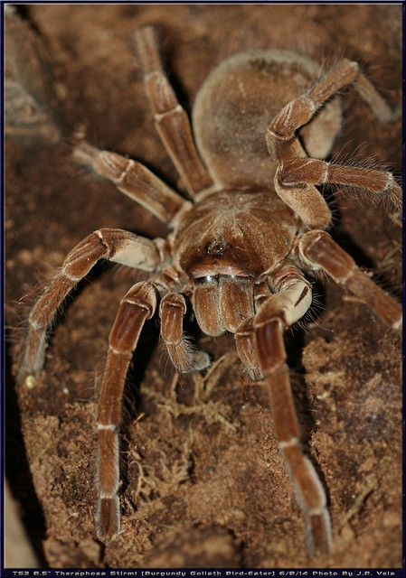

Spiders are among the most numerous and fascinatingly diverse groups of animals on Earth. With more than 50,000 known species found on every continent except Antarctica, they exhibit an incredible range of sizes, colors, behaviors, and habitats. From tiny jumping spiders with remarkable vision to large orb-weavers that spin intricate webs, each species has evolved unique adaptations that help it survive. This remarkable diversity makes spiders an important part of ecosystems and a captivating subject for scientific study. Below are some common spider species you might encounter:
Jumping Spider

Jumping spiders are small, agile hunters known for their excellent vision and ability to leap long distances. They do not build webs to catch prey but instead actively stalk and pounce on their targets.
Orb-Weaver

Orb-weavers are known for their large, circular webs that they use to catch flying insects. They come in a variety of colors and patterns, and their webs can be quite intricate and beautiful.
Black Widow

The Black Widow is a venomous spider known for its shiny black body and red hourglass marking. It is found in temperate regions around the world and is known for its potent venom, which can cause severe pain and muscle cramps in humans.
Goliath Birdeater

The Goliath Birdeater is one of the largest spiders in the world, known for its impressive size and docile nature. Despite its intimidating appearance, it is generally harmless to humans.
Wolf Spider

Wolf Spiders are robust, agile hunters that do not spin webs to catch prey. They are found worldwide and are known for their excellent eyesight and fast running speed.
Brown Recluse

The Brown Recluse is a small, brown spider with a distinctive violin-shaped marking on its back. It is native to the United States and is known for its necrotic venom, which can cause tissue damage in humans.
Golden Silk orb-weaver

The Golden Silk orb-weaver is a large spider known for its impressive golden-colored silk. It constructs large, intricate webs that can span several feet and are often found in gardens and wooded areas.